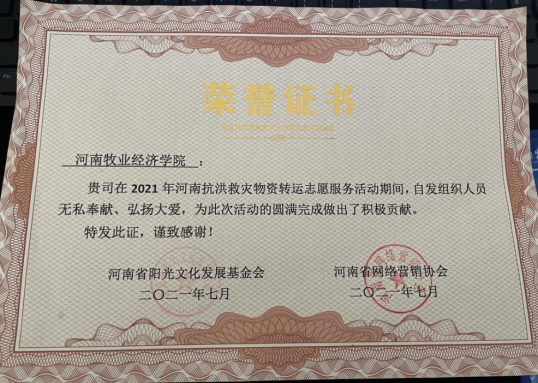
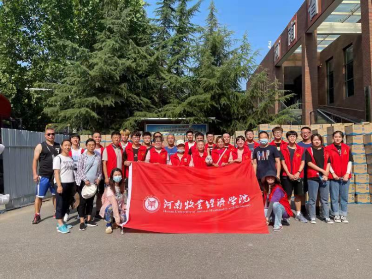
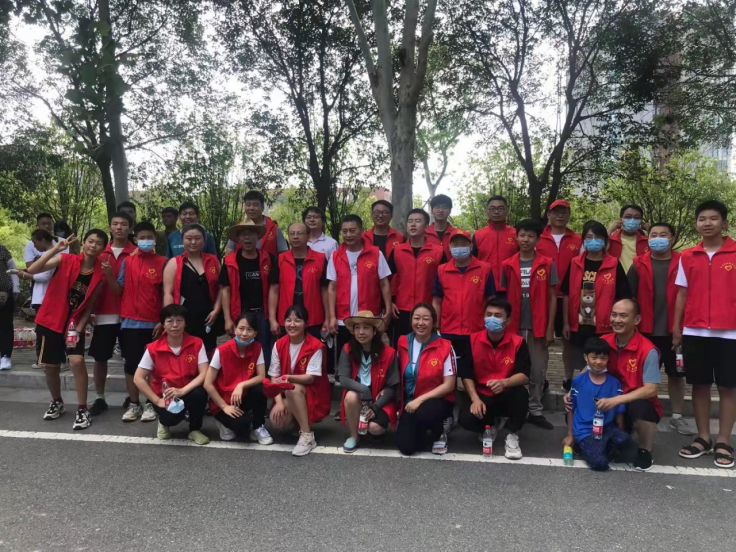
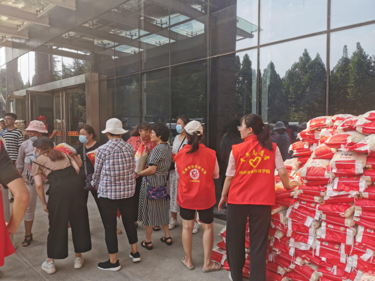

英才校区7.20志愿服务事迹材料
今年7月，我省多地因强降雨造成洪涝灾害，严重威胁着人民生命财产安全。习近平总书记作出重要指示，省委省政府积极动员各方力量全力开展防汛抢险救灾工作。学校党委向全校师生党员发出号召：发挥党员干部先锋模范作用，积极开展防汛抢险救灾工作。英才校区教职工和暑期留校团员青年积极响应，迅速组建了英才校区志愿服务队，积极投身防汛抢险救灾工作，为灾区人民群众奉献爱心，为防汛救灾贡献力量。
一、迅速集结，组建志愿服务队伍
党旗所指就是团旗所向。发生汛情以来，校团委积极响应党中央和学校党委号召，组织发动教职工和暑期留校大学生参与防汛抢险救灾志愿服务活动，牛建绥、赵建华、卫怀英、杨永民、胡蕾等领导身先示范，王森、唐明、唐若菲、崔海飞、任佳佳等同志积极响应，暑期留校的20多名大学生踊跃参与，迅速组建了一支50多人的志愿服务队伍。自7月23日起，坚持在救灾物资集散站开展救灾物资转运志愿服务工作，救灾物资转运工作一直持续到30日，圆满完成了物资接收存放和配送装卸任务，累计转运物资400多吨，装卸车辆40多车次。用实际行动为灾区群众奉献爱心。
7月31日，河南省阳光文化发展基金会、河南省网络营销协会向我校颁发荣誉证书，表彰我校志愿者踊跃参与抗洪救灾物资转运工作。
二、冲锋在前，践行党员使命担当
防汛救灾，责无旁贷。抢时间就是抢生命，党员干部带头冲锋在前，争分夺秒抢运物资，全力以赴积极为防汛救灾贡献力量。郑州师范学院东校区物资集散点是郑州北区重要的物资中转站，承担着向豫北受灾地区配送物资的重要任务，物资多、任务重、时间紧，每天都有大量物资到站，志愿服务队的师生们每天在接到任务后总是率先到达，身穿红马甲带头苦干、实干，苦活累活抢着干，喊着“中国加油！河南加油！郑州加油！新乡加油！”的口号，奋力抢运物资，为灾区救灾争取宝贵时间。每当卡车送来一车物资需要卸货，党员干部首先爬上最高处往下搬运，有时需要装车配送，同志们就抢着钻进密闭厢货车最里头码垛，有几次运输的是100斤一袋的大米，大家或扛或抬抢着干，年轻的同志换下年纪大的老师和居民志愿者，在烈日下没有一个人喊苦叫累，每次任务完成都是汗流浃背，饭顾不上吃，水顾不上喝也常态，经常搬运到深夜才悄然离开。物资集散点的老师和居民志愿者们纷纷夸奖志愿者们“就是中！”
同志们用“舍我其谁”的高度责任感，诠释了党员干部的责任与担当。
三、团结协作，弘扬志愿服务精神
团结一心、相互协作，志愿者们在志愿服务奉献爱心的同时也收获了成长。7月26日是所有搬运抗洪救灾物资工作量最重的一天，但也是全体队员最难忘的一天。早上八点半大家就早早到物资集散点集合，一个上午陆续搬运了35吨饮用水。由于每箱水都很重，年轻的同志都抢先爬上车负责向下搬运，大家分工配合，接箱、传递、码垛有条不紊，大家彼此关心、相互配合，在工作起初，大家因为缺乏经验，平衡点难以控制，有人被箱子带翻摔到地上，也有人被砸到了胳膊、磕破了腿、擦伤了手，但大家相互鼓励、彼此提醒、总结经验，转递速度越来越快。中午大家认真总结经验，调整工作方法，进一步提高了效率。晚上七点大家再次集合开始卸载大米，由于货车为超长挂车，只能倒车到门口从车尾卸车，空间狭小，卸载大米十分不方便，并且一袋大米近百斤重。但为了抢运物资，大家咬牙坚持用肩扛、用车推，拼尽全力用最快的速度装卸物资，喊着口号，互相鼓励、咬牙坚持！一直干到深夜10点多，没有一个人叫苦叫累。
同志们用实际行动奉献爱心，与灾区群众同舟共济、同克时艰，共同筑起了一座“爱心长城”。
四、凝心聚力，投身疫情防控阻击战
疫情就是命令，防控就是责任。7月底，疫情突如其来，志愿服务队的同志们第一时间响应学校号召，刚刚完成防汛救灾物资转运任务，又积极投身疫情防控志愿服务工作中去，主动向社区报到，踊跃参加社区居民全员核酸检测志愿服务工作。我校英才校区生活园区核酸检测点是惠济区迎宾路街道办事处的重要岗位卡点，负责周边多个大型小区近万名居民的核酸检测任务。在学校教师党员志愿服务队的指挥带领下，志愿者们与全程参与了四轮全员核酸检测志愿服务工作，大家分工配合，开展信息登记、秩序维护、后勤保障等服务工作，他们不惧高温和风险，任劳任怨坚守一线。每次工作结束后，嗓子喊哑了，防护手套、头套摘下后满是汗水，双手被汗水渍皱了，衣服拧出水来，但他们从不叫苦叫累，还相互鼓励、加油打气。志愿者们的辛勤付出得到了广大居民的交口称赞。在志愿者们积极参与下，核酸检测工作效率大幅度提高，平稳有序地完成了四轮近4万人次的核酸检测任务，受到社区领导的充分肯定！
志愿服务队的同志们闻令而动、冲锋在前，以强烈的责任意识，强担当、勇作为，大力弘扬“奉献、友爱、互助、进步”的志愿服务精神，积极参与抗洪救灾和疫情防控，用行动践行共产党员的初心使命与责任担当，展现了牧经人朝气蓬勃、昂扬奋进的精神风貌！志愿者们将继续以饱满的热情投身志愿服务活动，用行动弘扬时代主旋律，传递社会正能量。

牛建绥，男，中共党员，图书馆党委书记。带头参加抗灾救灾和抗击新型冠状病毒传染的志愿者活动，作为领导干部，他坚持奋勇当先、身先示范，每次救灾物资搬运都带头实干、苦干，他总是说：党员就是要做到像习总书记说的那样“平时能看出来、难时能站出来、危险时刻能豁得出来！”牛书记在疫情防控志愿服务中，始终坚守在一线，还热情指导其他志愿者开展工作，激励广大师生志愿者克服困难服务社区群众，充分展现了党员干部的作为与担当。
王森，男，中共党员，校团委副书记。第一时间响应学校号召，积极组织、动员教职工和留校大学生共同参与志愿服务活动，担任志愿服务队队长，积极与社区联络沟通，认真做好志愿服务活动的联络沟通、组织协调工作，积极主动开展志愿服务工作。后期在疫情防控工作中，他动员和组织志愿者参与社区核酸检测工作，与其他部门密切配合，共同圆满完成多轮全员核酸检测任务，获得社区干部群众广泛好评。
